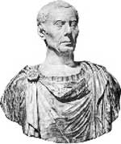

“O daracık dünyayı bir dev gibi yönetti” diye yazar William Shakespeare Sezar’dan (MÖ 100-44) bahsederken. Romalı general ve politikacı, çağının en etkili insanları arasında yer almaktadır. Aynı zamanda Batı tarihinin en önemli şahsiyetlerinden biri olarak kabul edilmektedir. Sezar Galya’yı feth etmiş ve Roma Senatosu’nun gücünü ortadan kaldırmıştır. Antik dünyanın en büyük imparatorluğunun kurucusudur.
Sezar ömür boyu diktatör ilan edilmesinden kısa bir süre sonra suikaste uğradı. Roma’nın cumhuriyetten imparatorluğa geçiş süreci ise manevi oğlu Octavian’ın (MÖ 63-MS 14) döneminde son buldu ve Octavian İmparator Augustus unvanını aldı.
Sezar’ın yaşamı antik dünyanın en iyi bilinen yaşam öyküleri arasında yer almaktadır. Bunu büyük ölçüde kendi kaleme aldığı savaş anılarına borçluyuz. Aristokrat bir ailede dünyaya gelmiş ve henüz genç bir delikanlıyken orduya katılmıştı. Çok bilinen bir hikayede anlatıldığına göre, Ege Denizi’nde korsanlar tarafından kaçırılmış ve ailesinden serbest bırakılması için fidye istenmişti. Sezar korsanların kendisi için istediği bedeli düşük bularak çok öfkelenmiş ve onlardan kendisi için istenen bedeli arttırmalarını talep etmişti. Serbest kalmasının ardındansa korsanları yakaladı ve onları çarmıha gerdi.
Sonraki birkaç on yıl içerisinde Sezar askeri ve politik kariyerinde hızla yükseldi. MÖ 69 yılında günümüz İspanya’sında bulunan Roma eyaleti Aşağı Hispania’ya vali olarak atandı. MÖ 63 yılında ise Roma’nın en büyük dini makamı olan “pontifex maximus” seçildi.
Sezar dört yıl sonra, MÖ 59 yılında Galya’nın fethine girişti. İki generalle birlikte Roma hükümetini kontrol eden üçler erkini oluşturdu. MÖ 50 yılında Sezar’ın büyüyen gücünden korkan senato ondan ordusunu dağıtmasını istedi.
Sezar’ın senato kararına uymayı reddetmesi ve MÖ 49 yılının Ocak ayında Rubicon Nehri’ni geçmesi sonraki yıl kendi zaferiyle sonuçlanacak olan bir iç savaşın başlamasına neden oldu. Güçleri elinden alınmış olan senato onu geçici bir süre için diktatör ilan etti. Daha sonra ise ömür boyu diktatör yani “dictator perpetuo” ilan edildi. (MÖ 44)
Bu son adım onun bir monarşi kuracağından korkan karşıtları için bardağı taşıran son damla oldu. Bir grup komplocu Roma Forumu’nun merdivenlerinde onu bıçaklayarak öldürdüler (15 Mart, MÖ 44).
Ek Bilgiler
1- Sezar’ın ailesi, Roma’nın aşk ve bereket tanrıçası Venüs’ün soyundan geldiklerini iddia ediyordu.
2- Mükemmel bir hatip ve yazar olarak kabul edilen Sezar’ın iki savaş hatıratı bulunmaktadır. Birisi Galik Savaşları’na diğeri ise İç Savaş’a ilişkin yorumlarını içermektedir. Bu kitaplar Roma tarihinin ilgili dönemlerine ait en önemli kaynakları oluşturmaktadır. Sezar yazarken kendisinden üçüncü şahıs olarak bahsetmesiyle ünlüdür. Örnek vermek gerekirse Gallik Savaşları’nın bir bölümüne şöyle başlar: “Nice savaşçı ulusları fetheden Sezar...”
3- Ölümünün ardından “sezar” adı askeri liderler ve imparatorlar için genel bir unvan haline geldi. Alman ve Rus monarkları için kullanılan kayzer ve çar unvanlarının her ikisi de “sezar” sözcüğünden türetilmiştir.